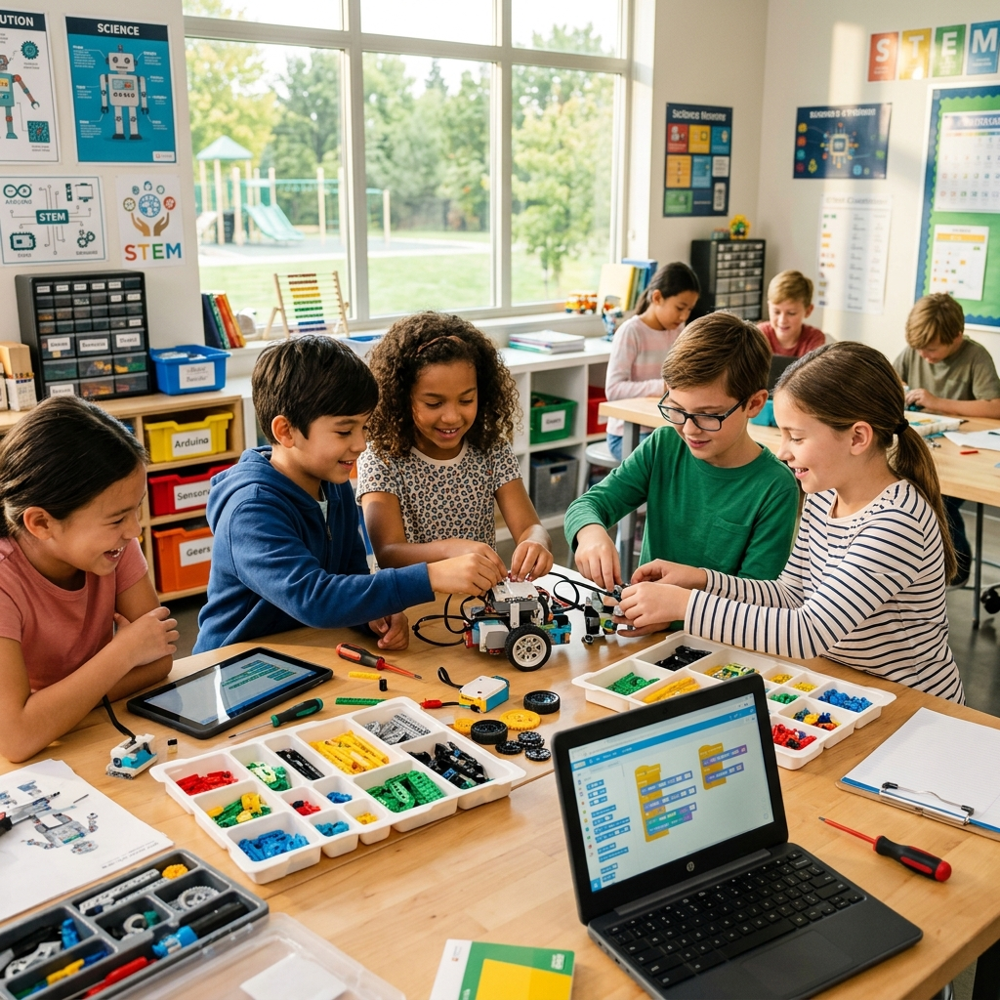
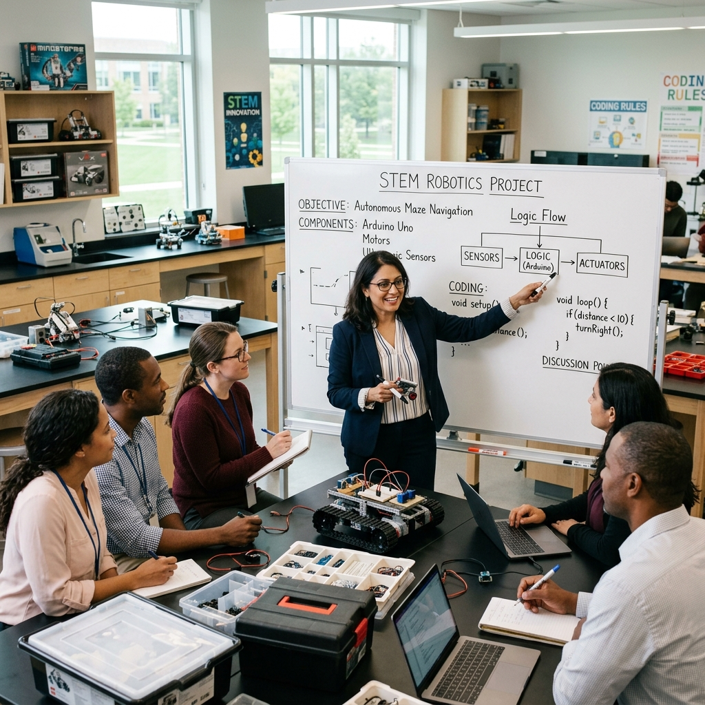
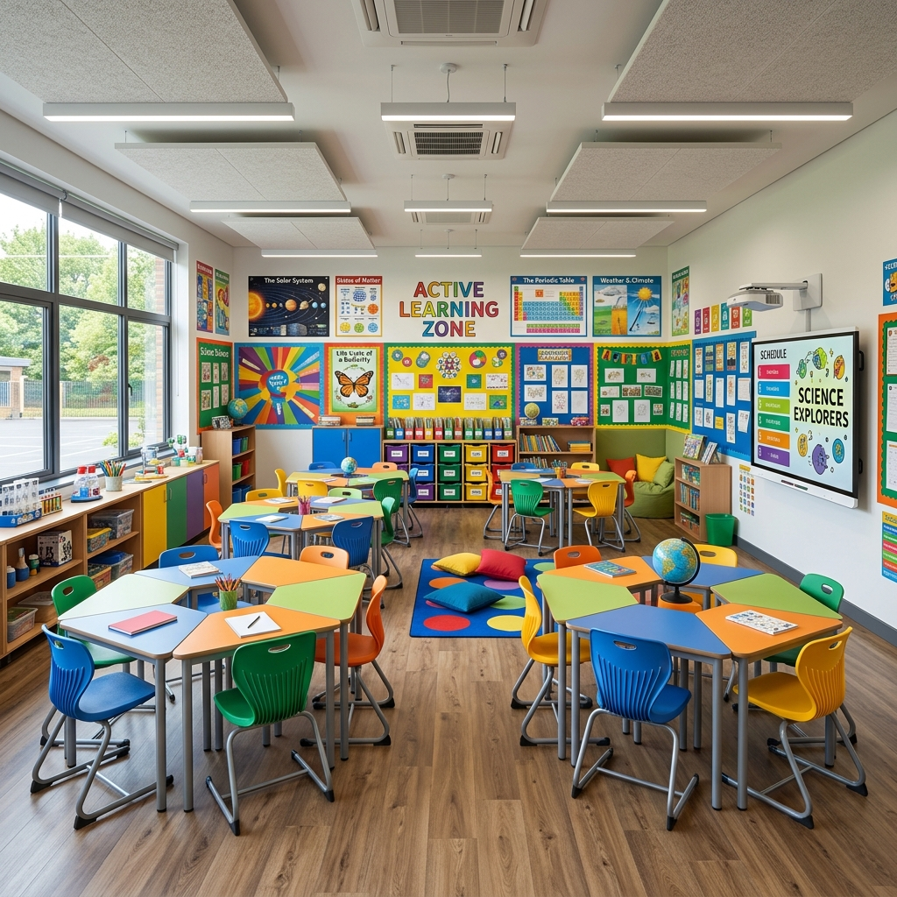

Sınıf öğretmenliği temelli bütünleşik STEM eylem araştırmaları yürütüyor, eğitim politikalarını veri analizi yöntemleriyle güçlendiriyorum.
STEM Uzmanı & Veri Analisti
Eğitimin gücüne inanan ve bilimsel araştırmaları sahadaki uygulamalarla birleştiren bir akademisyen ve eğitim koordinatörüyüm.
Necmettin Erbakan Üniversitesi'nde Sınıf Eğitimi alanında doktora derecemi aldım. Doktora çalışmamda, ilkokul düzeyinde bütünleşik STEM etkinliklerinin sınıf öğretmenleriyle birlikte uygulanmasına yönelik kapsamlı eylem araştırmaları gerçekleştirdim.
Şu anda Millî Eğitim Bakanlığı (MEB) bünyesinde Veri Analisti ve STEM İl Koordinatörü olarak görev almaktayım. Öğretmenlerin mesleki gelişimini desteklemek, eylemsel araştırmalar yoluyla okul temelli öğrenme modellerini geliştirmek ve veri odaklı kararlarla eğitim kalitesini artırmak için çalışıyorum.
Fen, teknoloji, mühendislik ve matematik disiplinlerinin ilkokul düzeyinde entegrasyonu, pratik uygulamalar ve müfredat tasarımları.
Öğrenme analitiği, öğretmen mesleki bağlılık analizleri, veri görselleştirme ve MEB süreçlerinde veri tabanlı eylem planlama.
Katılımcı eylem araştırmaları ile öğretmenlerin sınıflarındaki sorunlara bilimsel çözümler üretmesi ve mesleki gelişim modelleri.
Müdürlük bünyesindeki eğitime dair verilerin (akademik başarı, öğretmen eğitimleri, proje katılımları) toplanması, analiz edilmesi ve raporlanması süreçlerini yönetiyorum. Karar alıcılara analitik destek sağlıyorum.
Osmaniye ve Mersin'de STEM eğitim uygulamalarının koordinasyonunu, çalıştayların organizasyonunu ve öğretmen eğitimlerini yürütmekteyim. Okulların "STEM Okul Etiketi" (STEM School Label) alması için mentorluk yapıyorum.
Temel Eğitim Bölümü Sınıf Eğitimi Anabilim Dalı.
Doktora Tez Konusu: "İlkokul düzeyinde bütünleşik STEM/STEAM etkinliklerinin uygulanması: Sınıf öğretmenleriyle bir eylem araştırması."
Sınıf Öğretmenliği Anabilim Dalı. İlkokul öğretmenlerinin tükenmişlik düzeyleri ile mesleki ve örgütsel bağlılıkları üzerine ampirik araştırmalar ve veri analizleri.
Adana ve çeşitli illerde ilkokul kademesinde sınıf öğretmenliği, okul yönetimi destek süreçleri ve projelerin koordinasyonu.
Systemic Practice and Action Research, 2022
Sınıf öğretmenlerinin fen, teknoloji, mühendislik ve matematik derslerine sanatsal süreçleri nasıl entegre edebileceklerini eylem araştırmasıyla inceleyen uluslararası yayın.
Necmettin Erbakan Üniversitesi, 2019
İlkokul sınıflarında öğretmenlerin STEM etkinliklerini tasarlama ve uygulamadaki pedogojik gelişim süreçlerini adım adım takip eden bilimsel eylem tezi.
Araştırmacı ve Eğitmen
Okullarda yenilikçi STEM metodolojilerinin uygulanması ve öğretmenlerin STEM becerilerinin uluslararası düzeyde geliştirilmesini hedefleyen AB projesi.
Mersin Üniversitesi Eğitim Fakültesi Dergisi, 2016
İlkokul öğretmenlerinin mesleki tükenmişlik durumlarının, sınıf içindeki mesleğe ve okula bağlılık düzeyleriyle olan ilişkisini inceleyen nicel araştırma.
Çalıştay Koordinatörü & Mentor
Mersin genelinde yüzlerce sınıf öğretmeninin katıldığı, disiplinlerarası STEM etkinlik planı geliştirme ve eylem araştırması yapma odaklı çalıştayların yönetimi.
İlköğretim Online, 2017
Sosyo-demografik faktörlerin ve mesleki tatminin, sınıf öğretmenlerinin okul bünyesindeki örgütsel bağlılığı ve işe devamlılığı üzerindeki yordayıcı etkisinin analizi.
Mersin geneli yürüttüğümüz öğretmen eğitimleri ve STEM okul faaliyetlerinin dinamik verileri.
İncelemek istediğiniz analiz parametresini seçiniz. Veriler anlık olarak grafikte güncellenecektir.
Eğitim çalışmalarımız 2024 yılından itibaren Mersin genelinde ivme kazanarak kümülatif olarak 1,450 öğretmene ulaşmıştır. STEM odaklı eylem araştırmaları sınıflarda yaygınlaşmaktadır.
Fen bilimleri eğitiminde öğrenmeyi okul sınırlarının dışına taşıyan ve öğrencileri gerçek dünya sorunlarıyla buluşturan otantik öğrenme modellerinin eylem planlaması.
Sınıf öğretmenlerinin mesleki bağlılık, işten ayrılma niyetleri ve sosyo-demografik özelliklerinin örgütsel bağlılığa etkisini istatistiksel yordama modelleriyle inceliyoruz.
Sınıf öğretmenleri üzerinde yürüttüğümüz geniş ölçekli nicel çalışma. Duygusal tükenmişlik ile mesleki adanmışlık arasındaki istatistiksel korelasyonlar.
Sınıf öğretmenlerinin pandemi dönemindeki uzaktan eğitim süreçlerine yönelik görüşleri, karşılaşılan pedagojik ve teknolojik engellere dair nitel analiz bulguları.



Sorularınız, iş birliği teklifleriniz ya da STEM Okul Etiketi danışmanlık talepleriniz için aşağıdaki iletişim kanallarından veya form üzerinden bana ulaşabilirsiniz.
Mersin İl Millî Eğitim Müdürlüğü, Yenişehir / Mersin